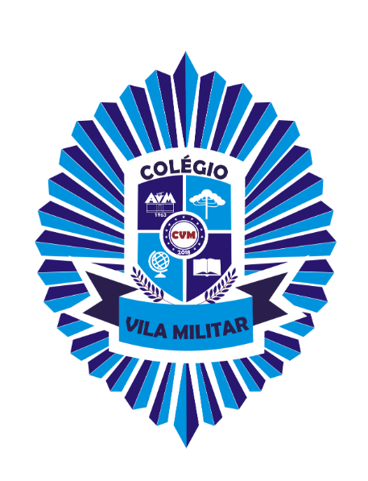
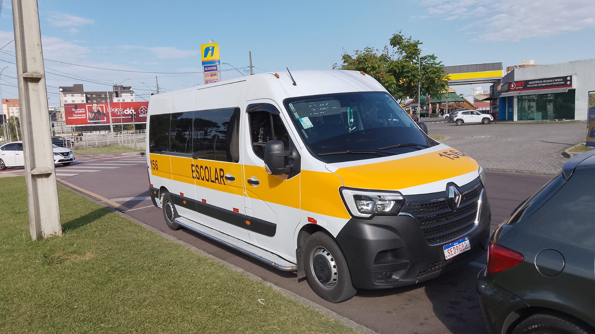
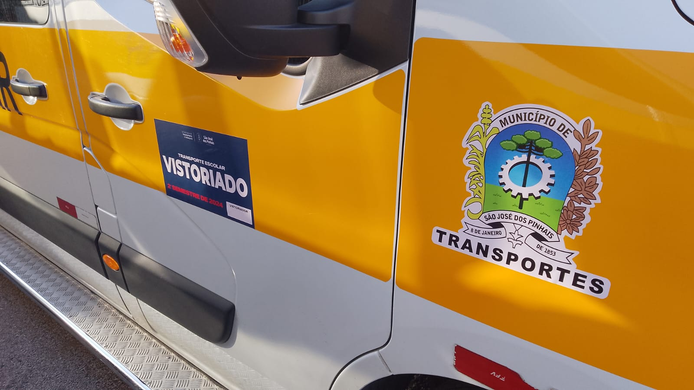
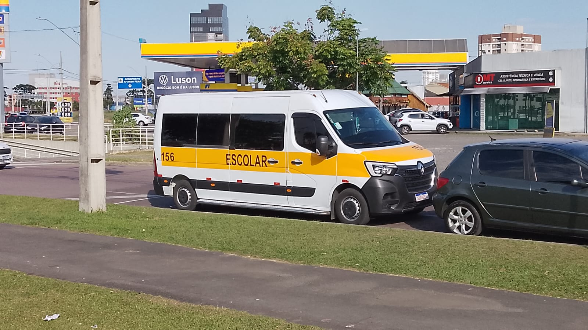

Nossa Van 156 oferece um serviço credenciado, dedicado e cheio de afeto, garantindo a tranquilidade que a sua família merece no trajeto escolar.
Atuando em São José dos Pinhais, o Tio Julio Serra oferece um transporte escolar diário rigorosamente pontual, onde cada criança é acolhida com o máximo carinho, ambiente familiar e total proteção durante todo o percurso.
Veículo mantido sob frequentes vistorias, equipado com cinto de segurança e adequado às normas escolares.
Horários alinhados com a rotina das escolas para garantir a chegada e o retorno tranquilos.
Tratamento atencioso e um ambiente alegre e acolhedor em cada trajeto, para as crianças se sentirem em casa.
Contato fácil e rápido com os pais via WhatsApp, mantendo a família sempre informada.
Trajetos planejados para o menor tempo de deslocamento, com segurança e eficiência.
Licença, seguro e toda a documentação exigida sempre atualizada e em perfeita ordem.
Transporte escolar especializado com rotas diárias para os colégios de destaque da região.
Atendimento dedicado para os alunos com horário pontual e segurança reforçada.

Rotas planejadas para garantir a chegada e o retorno tranquilos das crianças.
Confira as imagens do veículo moderno, vistoriado e regulamentado que transporta seus filhos todos os dias.



Um desenho animado divertido para as crianças e toda a família assistirem!